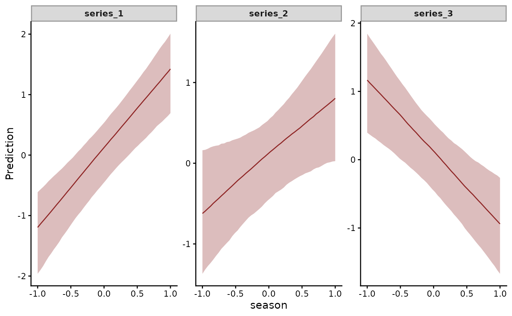

Use lv_axis() in a trend_formula in any position that takes a
factor variable, to give each latent factor its own effect. In a
model with no latent factors it gives each series its own effect.
Details
trend_formula = ~ s(elev, by = lv_axis()) + AR(n_lv = 2)
trend_formula = ~ temp:lv_axis() + AR(n_lv = 2)
trend_formula = ~ (1 + temp | lv_axis()) + AR()
trend_formula = ~ s(temp, lv_axis(), bs = "fs") + AR()With n_lv set on the trend constructor, each factor
k = 1, ..., n_lv takes its own effect. The effect of a covariate
on series s is the sum over factors of the loading Z[s, k] times
the effect on factor k. This is constrained ordination, the model
jsdgam() fits. Every term of such a trend_formula is then
evaluated once per factor and time. Each covariate must take one
value per time.
With no n_lv, each series takes its own effect on the latent
state.
The series column itself is not supported in a trend_formula
term. Write lv_axis() for an effect that differs along the
trend's axis. An effect of the series on the observations belongs
in formula. by = trend is deprecated and is treated as
by = lv_axis().
What each form estimates
With no latent factors, lv_axis() is each series:
~ x:lv_axis()gives a slope ofxper series.~ lv_axis()gives a level per series.~ (1 + x | lv_axis())gives levels and slopes that are partially pooled across series.~ s(x, by = lv_axis())gives a smooth ofxper series, and~ s(x, lv_axis(), bs = "fs")gives smooths that share a smoothness penalty.
With n_lv latent factors, each of these is estimated once per
factor. The coefficient of one factor has no scale of its own. The
loadings and the factor effects trade scale. The data identify
their product. conditional_effects() and predict()
report that product, the effect of the covariate on each series,
and conditional_effects() draws a panel per series. When every
lv_axis() term is a slope or a level, cmdstanr::summary() reports the
per-factor coefficients in the basis of the identified loadings
Z_tilde.
See also
jsdgam() fits per-factor effects across species.
conditional_effects.mvgam() plots the effect on each series. The
dynamic factor vignette fits factor
models. The JSDM article fits
per-factor trait and covariate effects.
Other trend models:
LLT(),
PW(),
RW(),
ZMVN(),
list_trend_types()
Examples
# `lv_axis()` marks a term in a formula. Called by itself it
# returns NULL.
lv_axis()
# \dontrun{
# Three series whose seasonal effect differs: 1, 0.5 and -1
set.seed(1)
dat <- sim_mvgam(family = gaussian(), n_series = 3L,
n_timepoints = 60L)$data_train
dat$season <- sin(2 * pi * dat$time / 12)
dat$y <- dat$y + c(1, 0.5, -1)[as.integer(dat$series)] * dat$season
# One seasonal slope per series
mod <- mvgam(
formula = y ~ 1,
trend_formula = ~ season:lv_axis() + AR(p = 1),
data = dat,
family = gaussian(),
chains = 2,
silent = 2
)
#> Warning: 33 of 2000 (2.0%) transitions ended with a divergence.
#> See https://mc-stan.org/misc/warnings for details.
summary(mod)
#> Family: gaussian
#> Links: mu = identity; sigma = log
#> Formula: y ~ 1
#> Data: dat (Number of observations: 135)
#> Series: 3
#> Trends: AR(1); formula: ~season:lv_axis()
#> Draws: 2 chains, each with iter = 2000; warmup = 1000; thin = 1;
#> total post-warmup draws = 2000
#>
#> == Observation Model ==
#> Regression Coefficients:
#> Estimate Est.Error l-95% CI u-95% CI Rhat Bulk_ESS Tail_ESS
#> Intercept 0.10 0.25 -0.45 0.53 1.01 266 746
#>
#> Further Distributional Parameters:
#> Estimate Est.Error l-95% CI u-95% CI Rhat Bulk_ESS Tail_ESS
#> sigma 0.89 0.11 0.70 1.11 1.02 216 354
#>
#> == Trend Model ==
#> Regression Coefficients:
#> Estimate Est.Error l-95% CI u-95% CI Rhat Bulk_ESS
#> season:seriesseries_1 1.32 0.22 0.88 1.75 1.00 1450
#> season:seriesseries_2 0.72 0.31 0.09 1.33 1.00 1339
#> season:seriesseries_3 -1.05 0.26 -1.58 -0.54 1.00 1464
#> Tail_ESS
#> season:seriesseries_1 1206
#> season:seriesseries_2 1399
#> season:seriesseries_3 1302
#>
#> Trend Specific Parameters:
#> Estimate Est.Error l-95% CI u-95% CI Rhat Bulk_ESS
#> sigma_trend[series_1] 0.34 0.20 0.02 0.79 1.01 320
#> sigma_trend[series_2] 0.72 0.25 0.14 1.17 1.01 255
#> sigma_trend[series_3] 0.43 0.17 0.15 0.80 1.01 508
#> ar1_trend[series_1] 0.37 0.51 -0.67 0.99 1.01 216
#> ar1_trend[series_2] 0.50 0.29 -0.17 0.94 1.00 350
#> ar1_trend[series_3] 0.78 0.21 0.25 0.99 1.01 442
#> Tail_ESS
#> sigma_trend[series_1] 630
#> sigma_trend[series_2] 252
#> sigma_trend[series_3] 560
#> ar1_trend[series_1] 153
#> ar1_trend[series_2] 599
#> ar1_trend[series_3] 308
#>
#> Draws were sampled using sampling(NUTS). For each parameter, Bulk_ESS
#> and Tail_ESS are effective sample size measures, and Rhat is the potential
#> scale reduction factor on split chains (at convergence, Rhat = 1).
#>
#> Next steps:
#> - `pp_check(fit)`: posterior predictive checks
#> - `forecast(fit, newdata = ...)`: out-of-sample forecasts
#> - `lfo_cv(fit)`: leave-future-out model comparison
#> - `conditional_effects(fit)`: covariate effects
#> Use `how_to_cite(fit)` for a methods paragraph and `methods_md(fit)` for its equations.
conditional_effects(mod)

# With two latent factors, each factor takes a seasonal slope. The
# loadings carry the two slopes to the three series. The prior
# table lists one coefficient per factor. A smooth takes the same
# marker: `s(season, by = lv_axis())`
get_prior(
mvgam_formula(y ~ 1,
trend_formula = ~ season:lv_axis() + AR(p = 1, n_lv = 2)),
data = dat,
family = gaussian()
)
#> prior class coef group resp dpar nlpar lb ub
#> student_t(3, 0.1, 2.5) Intercept
#> student_t(3, 0, 2.5) sigma 0
#> normal(0, 0.5) ar1_trend -1 1
#> student_t(3, 0, 0.5) Z
#> (flat) b_trend
#> (flat) b_trend season:.trend1
#> (flat) b_trend season:.trend2
#> tag source
#> default
#> default
#> default
#> default
#> default
#> (vectorized)
#> (vectorized)
# }